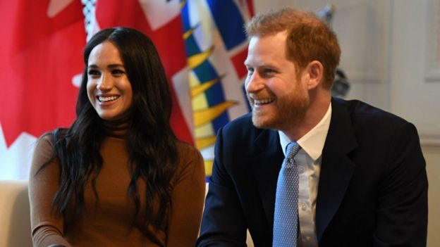
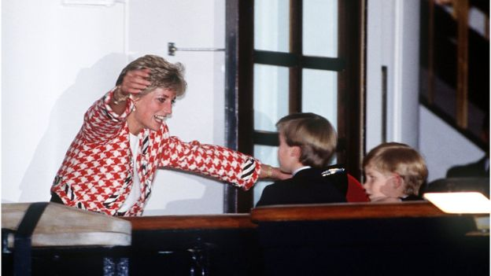

The Royal Family are said to be "hurt" at the Duke and Duchess of Sussex's announcement they will step back as senior royals.
Prince Harry and Meghan did not consult any senior royal before making the statement, it is understood.
Buckingham Palace was "blindsided", said BBC royal correspondent Jonny Dymond, as talks about their future had begun but were in very early stages.
The Palace said there were "complicated issues" to work through.
In their statement on Wednesday, Harry and Meghan said they made the decision "after many months of reflection and internal discussions".
They said they intend "to step back as 'senior' members of the Royal Family, and work to become financially independent".
They plan to split their time between the UK and North America, while "continuing to honour our duty to the Queen, the Commonwealth, and our patronages".
"This geographic balance will enable us to raise our son with an appreciation for the royal tradition into which he was born, while also providing our family with the space to focus on the next chapter," the couple said.
The pair was already preparing to launch their own Sussex Royal charity, which they set up after splitting from the Duke and Duchess of Cambridge's foundation in June last year.
The Sussexes' new charity is expected to be global, linked to Africa and the US, rather than domestic - and will have a commitment to female empowerment.
Why North America?
Meghan, of course, is American herself and has a particularly close relationship with her mother who lives in California.
But the Sun, which broke the story on Wednesday, was firm in its speculation that Canada was their likely destination.
The couple have just returned after a six-week break from royal duties, which they spent in Canada with their eight-month-old son, Archie.
After returning to the UK on Tuesday, Harry, 35, and Meghan, 38, visited Canada's High Commission in London to thank the country for hosting them and said the warmth and hospitality they received was "unbelievable".
Former actress Meghan lived and worked in Toronto for seven years during her time starring in the popular US legal drama Suits.
She has previously spoken about adopting the city as her second home after her native Los Angeles, and she she has several Canadian friends.

The couple's announcement raises numerous questions over what their future royal roles will entail.
How will they become 'financially independent'?
In stepping back as senior royals, Harry and Meghan have announced they will no longer receive funding from the Sovereign Grant.
The couple said this will make them "members of the Royal Family with financial independence.".
The Sovereign Grant is public money which pays for the cost of official royal duties, in exchange for the surrender by the Queen of the revenue from the Crown Estate.
The Queen's Sovereign Grant from the Treasury was £82m in 2018-19.
The couple said the Sovereign Grant paid for 5% of their official office from 2019, with the remaining 95% being funded by Prince Charles through his income from the Duchy of Cornwall.
Under current rules, the pair said they are "prohibited from earning income in any form", but in their new roles could follow other title-holding royals in having full-time jobs.
The costs of official overseas visits will be funded by the Sovereign Grant and contributions from the host country "when appropriate".
The couple are classified as "internationally protected people", which means they must have armed security provided by the Metropolitan Police.
They will retain Frogmore cottage, the Grade-2 listed property in Windsor that cost taxpayers £2.4m to renovate, as their official residence so they have a "place to call home" in the UK.
What do commentators say?
Royal historian Prof Kate Williams said it will be "difficult" for Harry and Meghan to lead "normal" lives, as media interest in them will increase after their "unprecedented" move.
She told BBC Breakfast: "Harry and Meghan are global celebrities. Meghan was already famous [due to her former acting career]" as was Harry, who will become even "more significant" when his father - and later his brother - becomes king.
"He is always going to be very close to the royal fold. It is going to be difficult if Harry and Meghan are going to live in Canada for a certain period of time and try and get on with business and be normal, charitable CEOs.
"They will require security because I don't see the media interest in them waning, I see it as probably increasing, because what they're doing is so unprecedented for royals."
She said the Metropolitan Police or Foreign Office would pay for their security on royal business, but their security in Canada could be funded by their global charitable foundation..
A happy memory of Canada? The moment in 1991 when Prince Harry and his brother were reunited with their mother in Toronto during an official visit is an iconic royal image.
Royal commentator Penny Junor said the couple's actions were reminiscent of those of Harry's mother, Diana, Princess of Wales. The suggestion that they had not consulted other royals before making their statement was "beyond bizarre".
She said: "It has echoes of Diana when she suddenly announced after her separation [from Charles] that she was stepping back from 50 of her charities without consulting anybody.
"The problem is that they are not working for themselves, they are working for a family firm and to be making announcements of this sort without consulting is beyond bizarre."
Graham Smith, a spokesman for Republic, which campaigns for an elected head of state, said Harry and Meghan's decision "raises questions about the monarchy's future" and will prompt taxpayers to ask how the couple's extra security and overseas lifestyle will be funded..
Mr Smith questioned why they were announcing they were working towards being financially independent, saying: "To suggest that they're not already financially independent is incredibly crass and belies a sense of self-entitlement and a lack of self-awareness that is common among royals.".
He added: "This really is wanting to have your cake and eat it. They have said they will dip in and out of royal duties as it suits them but won't stop taking public money until they find other sources of income."